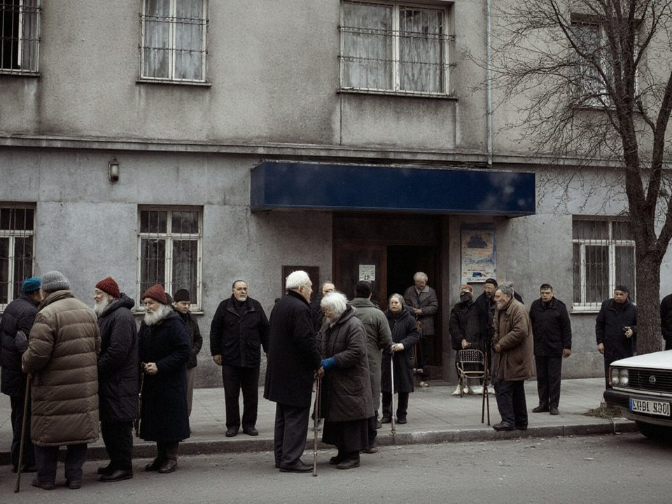

Take a number for the branch before you leave home. The number shows how many customers are ahead of you and how long you will wait. At present the electronic queue works at the Azatlık branch (Azatlık Prospect, Nurzhan); other branches will be connected in 2026.
Pension dayPensions and public wages are paid on the 10th of each month. The next pension day is .
On that day the Azatlık branch serves over a thousand customers. Pensions can be drawn on any later day, at any Talasbank branch and from any cash machine.
The branch will be rebuilt so that pension day no longer means a queue in the street.
